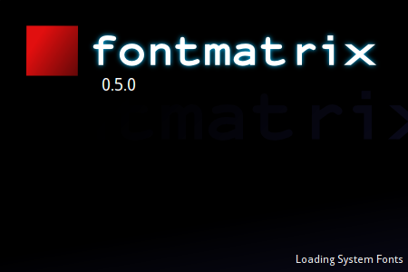

Cet onglet ne contient que trois options.
L'option Demander les noms des étiquettes lors de l'importation de polices définit si une boîte de dialogue s'ouvre pour demander d'attribuer des étiquettes aux polices que vous êtes sur le point d'importer. Voir le chapitre sur l'importation de polices pour plus de détails.
L'option Afficher les noms des polices importées après le processus d'importation définit si une boîte de dialogue s'ouvre pour lister les noms des polices que vous venez d'importer. Voir le chapitre sur l'importation de polices pour plus de détails.
Afficher l'écran de démarrage au démarrage — désactiver cette case à cocher masquera l'écran de démarrage que vous voyez au démarrage. L'affichage de l'écran de démarrage ne ralentit pas le démarrage, mais vous donne l'impression que l'application fait quelque chose d'utile pendant son chargement. Ce qu'elle fait en fait, mais pas de manière visible autrement.
